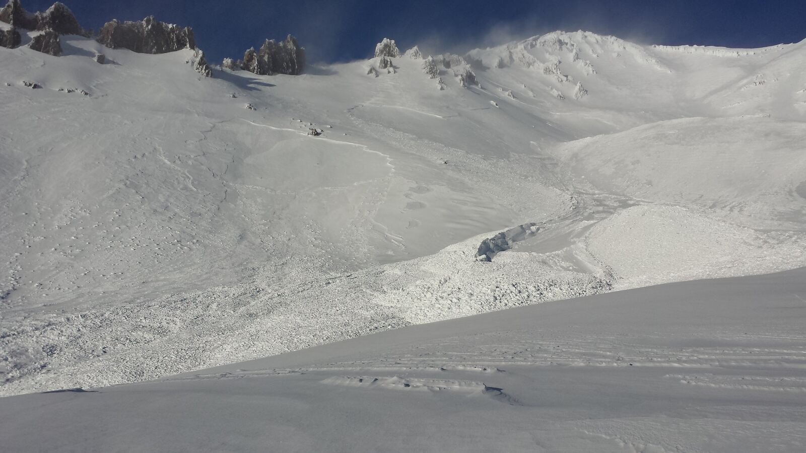
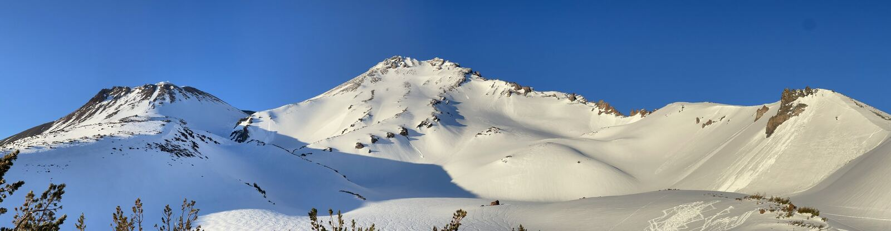
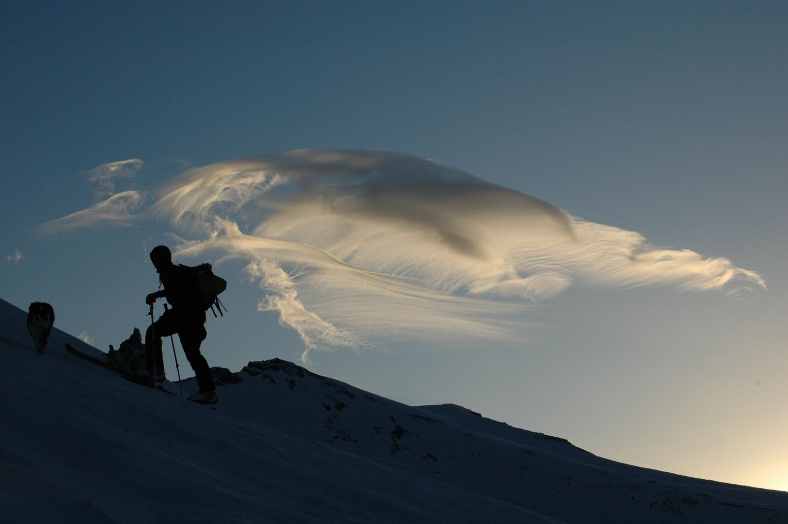
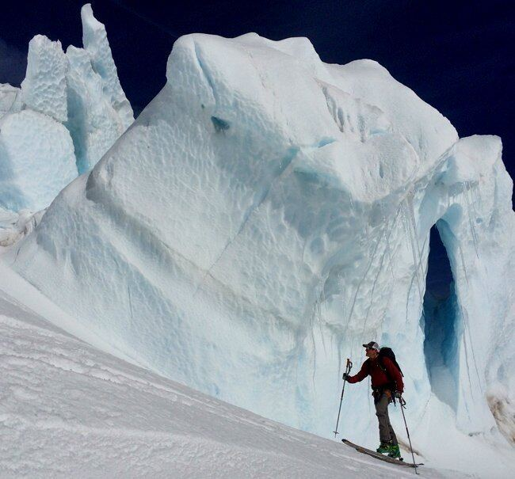
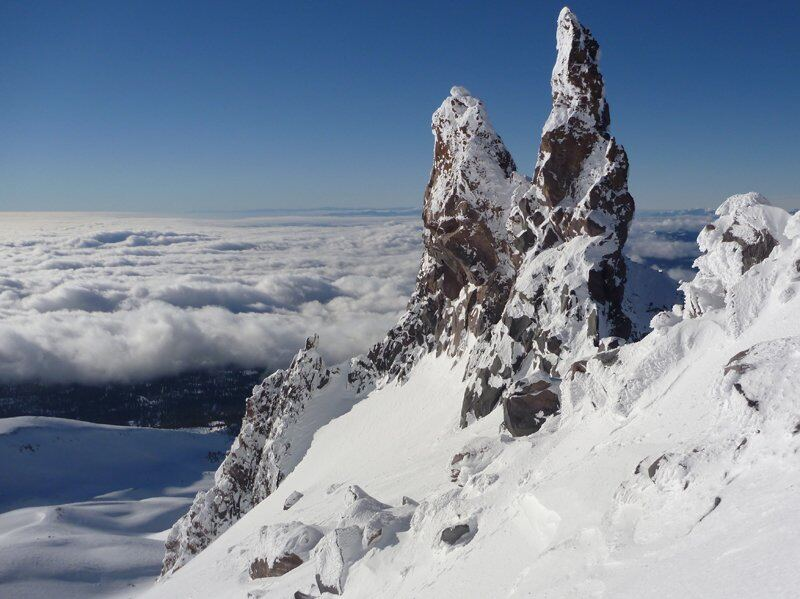
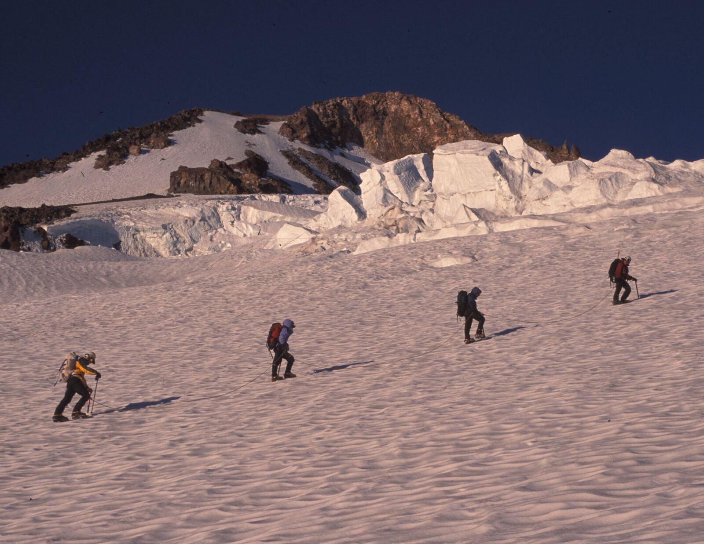
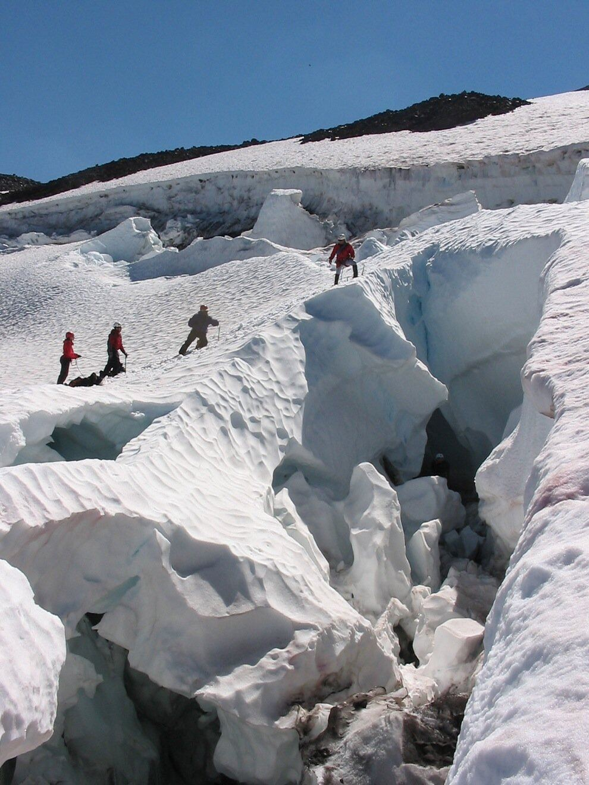
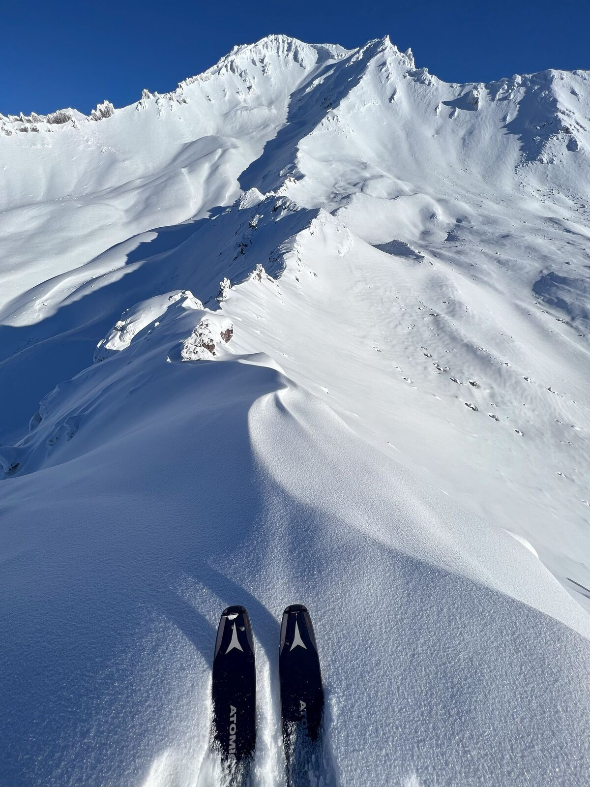
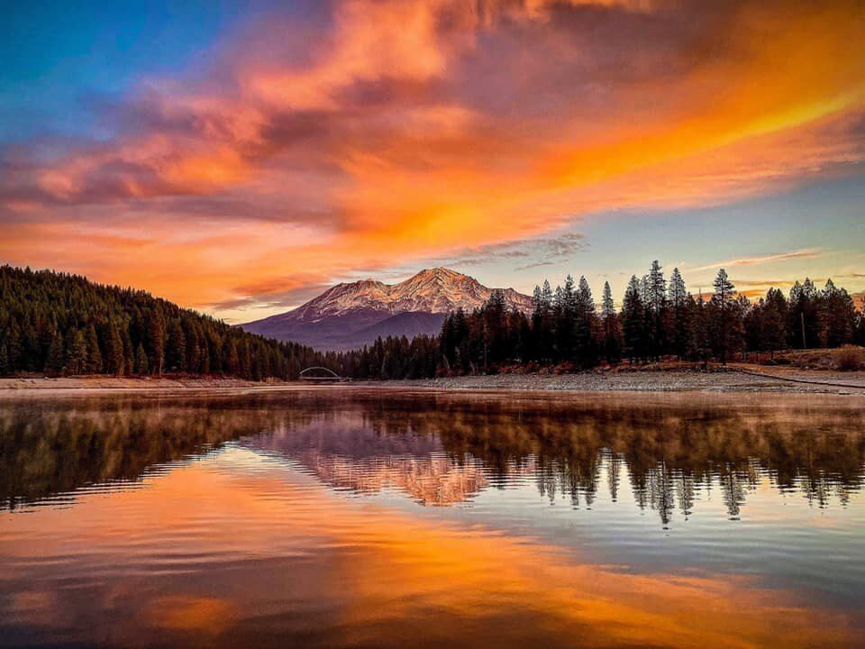
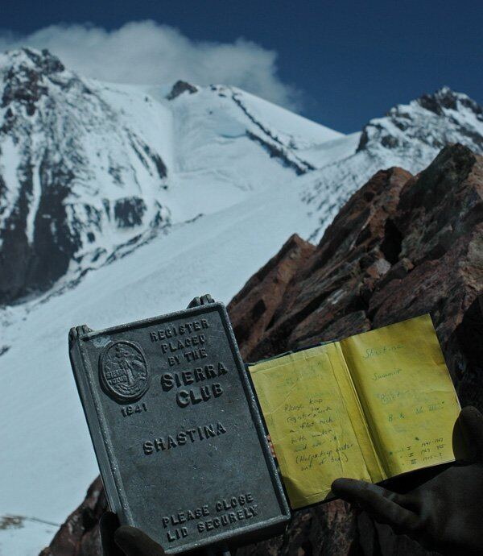

The second highest volcano in the United States and one of the great mountaineering objectives of North America.
Welcome to Mt. Shasta, the second highest volcano in the United States and a major peak of the Cascade Range and Pacific Ring of Fire. Climbing Mt. Shasta is considered one of the great mountaineering objectives of North America.
This magnificent mountain rises to 14,179 feet, and its base is more than 17 miles in diameter. Eight superb glaciers, California’s largest, adorn its flanks. With a volume of over 85 cubic miles, Mount Shasta is the largest stratovolcano in the Cascade Volcanic Arc. Mount Shasta is all the more stunning because it erupts from the ground; it’s not one of several peaks, it is the peak. Thus, it’s visible from hundreds of miles away, and lies at the center of many stories, legends and myths. All of this is complemented by splendid meadows of wildflowers, groves of Shasta Red Fir, and numerous mystical legends; you may meet a Yeti or even a Lemurian on your trip to the summit.
Mount Shasta is a significant alpine challenge – there is no trail or easy way to the top, all routes surmount major obstacles in order to reach the summit. The ascent requires over 7,000 vertical feet of climbing, and an ice axe and crampons to safely climb sections of snow and ice. Thousands of climbers attempt the summit each year, and most will be unsuccessful without proper training, preparation, instruction and guidance. Although mountaineering experience is very helpful before attempting Shasta, it is not required. Professional instruction and technique, along with diligent physical conditioning prior to the climb, can allow even a first time mountaineer to reach the summit. Our guides are patient and skilled professionals who want to help you learn the skills of mountaineering, and lead a safe, fun and successful climb.
Some might describe Mount Shasta as a beginners’ mountain, however we would say that Mount Shasta is rather a beginners’ big mountain, and is a great training ground for other big mountaineering objectives of the world, like Mount Rainier, Denali, high peaks in Mexico or South America, the Alps, the Himalayas, and beyond.










